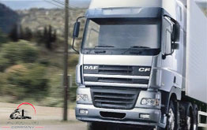

ГРУЗОПЕРЕВОЗКИ ПО УКРАИНЕ
ТРАНСПОРТНАЯ КОМПАНИЯ ГРУЗОПЕРЕВОЗКИ УКРАИНЫ
Украинская транспортная компания Gruzoperevoz.org - это, прежде всего, обеспечение профессиональной грузоперевозки по Украине любых видов груза! Если Вам необходимо по Украине: перевезти мебель или сборный груз, осуществить квартирный переезд или перевезти офис - наша компания всегда готова решить Ваши задачи! Перевозка грузов по Украине, таких как: крупногабаритный, негабаритный и длинномерный груз осуществляется нашими специалистами только на профессиональной основе. Специальная техника автопарка нашей организации позволяет перевезти сложный груз украинскими дорогами весом: 5 тонн, 10 тонн, 20 тонн, 25 тонн и более.
Согласитесь, что грузоперевозки по Украине является важнейшей отраслью бизнеса и позволяет успешно решать важные экономически задачи нашего государства. Большой объем украинских грузоперевозок предполагает наличие мощной структуры грузовых потоков на основе развитой транспортной системы. Данная отрасль грузоперевозок давно заняла и прочно удерживает самые главные позиции в транспортном комплексе Украины, а также, в полном объеме, удовлетворяет все потребности населения. В связи с вышеуказанным, предлагаем Вам воспользоваться всеми видами услуг грузоперевозки: в Украине на высоком уровне работает транспортная компания «Gruzoperevoz.org»! Опытные сотрудники нашей транспортной фирмы обеспечат наилучший грузовой обмен товарами между отдельными территориями и регионами нашего государства!
ГРУЗОПЕРЕВОЗКИ ПО УКРАИНЕ ЦЕНА ЗА КМ
украинские оптимальные цены на грузоперевозку
Оптимальная цена за км украинской грузоперевозки зависит от многих факторов. В нашей транспортной фирме доступны практически все виды услуг грузоперевозки по оптимальным ценам и с правильной расчетной стоимостью. Максимально востребованным, популярным и оптимальным видом грузоперевозок, на предмет ценовой политики, всегда была и остается цена на автоперевозку.
категории украинской ценовой политики грузоперевозок
Ценовая политика на перевозку грузовую в Украине делится на две основные категории: пассажирская - к этой категории относятся легковые автомобили и автобусы. Это означает обеспечение по оптимальным ценам перевозки внутри Украины пассажиров междугородним, внутригородским и пригородном сообщением. Грузовая - к данной категории относится перевозка по доступной цене различных грузов на тралах и тягачах, а также буксировка прицепов, полуприцепов и грузовых емкостей. Специальная категория - служит для выполнения по доступной цене исполнения различных технических функций, к которым относятся: работа на бульдозере, экскаваторе, тракторе, подъемном автокране, пожарной машине, передвижном компрессоре, катке, автовышке и других видах спецтехники. Теперь становится понятным, почему цена на грузоперевозку в Украине, с использованием различного автомобильного грузового транспорта, представляет такой большой интерес. Обращаем Ваше внимание на то, что специалисты нашей команды предложат только самую оптимальную цену на все услуги перевозок по Украине грузов, а также займутся обязательным отслеживанием и контролем передвижения груза на протяжении следования до пункта назначения.
ГРУЗОПЕРЕВОЗКИ ПО УКРАИНЕ ДИСПЕТЧЕР
функции и задачи диспетчера грузоперевозок
Грузоперевозки по Украине: диспетчер компании «Gruzoperevoz.org» грамотно исполняет функции по работе с клиентом-заказчиком. Основная задача опытного диспетчера - предложить владельцу груза оптимальный маршрут транспортировки к адресу доставки. На факторы выбора диспетчером маршрута движения груза по дорогам Украины, в первую очередь, влияет качество автомобильных дорог, соединяющих административные центры и области государства. Диспетчер Gruzoperevoz.org всегда оформляет грузоперевозки с учетом честной и оптимальной ценовой политики нашей транспортной компании. А также, в обязательном порядке, предлагается страхование любого вида транспортируемого дорогами Украины груза к железнодорожными станциям, аэропортам, морскими и речными портам, объектами культурного значения и местам отдыха.
услуги профессионального диспетчера грузоперевозки
Воспользуйтесь профессиональными услугами диспетчера грузоперевозок нашей организации! Диспетчер «Gruzoperevoz.org» поможет Вам ☎ выбрать оптимальный маршрут для перевозки вашего груза украиной. Наши сотрудники диспетчерского состава имеют огромный опыт в предоставлении услуг! Они имеют выдержку и максимально вежливы, а также всегда готовы оказать помощь и решить любые вопросы клиента. Обращайтесь и Вы всегда будете спокойны за Ваш груз в процессе перевозки по дорогам Украины!
ПОПУТНЫЙ ГРУЗ УКРАИНА
попутные грузоперевозки по украине оплата в одну сторону
Попутные грузоперевозки по маршрутам Украины - это значительная (до 51%) экономия ваших средств! Что такое - оплата в одну сторону? Это означает, что Вам не надо арендовать целый автомобиль для перевозки Вашего груза! Используйте грузовой транспорт, который планирует везти груз по необходимому Вам маршруту доставки. При этом, Вы заплатите за услугу транспортировки только в одну сторону. Воспользуйтесь тарифом нашей компании "минус 51 %" на попутную перевозку груза по дорогам Украины!
система догрузки украинской попутной грузоперевозки
Попутная грузоперевозка украинского сегмента приведет к динамичному развитию международных экономических связей. Используя возможность системы догрузки по определенному маршруту, Вы можете сократить расходную часть ваши средств на перевозку любого груза до пятидесяти процентов! При перевозке попутных грузов в любую точку Украины с использованием выгодной клиентской системы догрузки, Ваша экономия очевидна! Зачем платить больше?
-
офис-менеджер
044 530 50 11 -
менеджер
066 257 33 25менеджер
098 721 52 57
ЕСЛИ ВАМ НЕОБХОДИМО СДЕЛАТЬ ЗАКАЗ ИЛИ ЖЕ У ВАС ВОЗНИКЛИ ВОПРОСЫ ОТНОСИТЕЛЬНО ГРУЗОПЕРЕВОЗКИ ПО УКРАИНЕ, СВЯЖИТЕСЬ С МЕНЕДЖЕРАМИ НАШЕЙ КОМПАНИИ В ЛЮБОЕ УДОБНОЕ ДЛЯ ВАС ВРЕМЯ ПО ВЫШЕУКАЗАННЫМ ТЕЛЕФОНАМ ИЛИ НАПИШИТЕ НАШЕМУ МЕНЕДЖЕРУ, ЗАПОЛНИВ УДОБНУЮ ФОРМУ НА САЙТЕ.